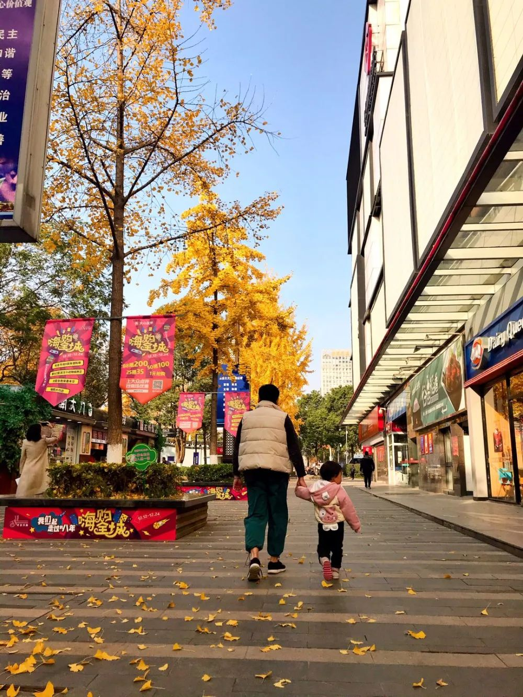
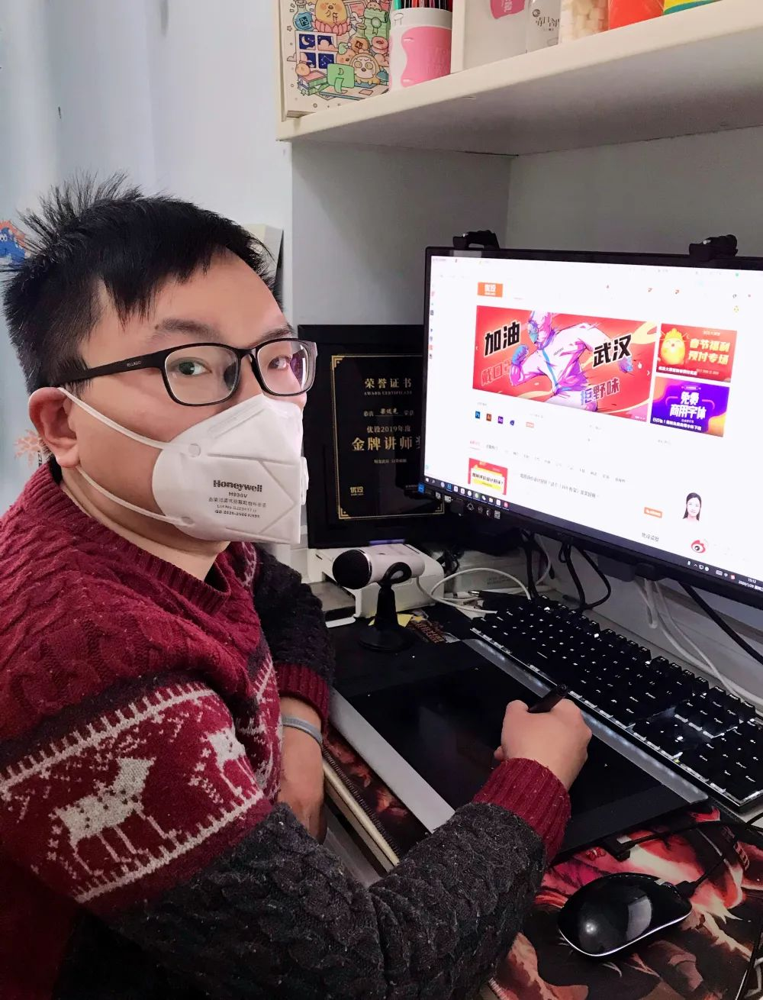

叶青武汉实录：“封城”17天，7个变化
原文链接 备份链接 从1月23日“封城”到元宵节，已经过去整整17天。即使我每天忙于记日记，也觉得时间过得很快啊。 过去我要早起，6点起床，7点到办公室，不堵车。现在则是天天睡到自然醒，有点提前退休的感觉。虽然我还有两年上班的时间。 …


2020年注定不平凡。武汉封城、公众场所关闭、复工日期不断推迟……疫情让武汉人的生活被迫减速甚至停滞，而一批又一批的医护人员和志愿者逆行奔赴战场。
疫情期间，我们见证了无数感人的英雄故事，也看到武汉在众志成城的凝聚中，静候曙光。
能够亲身参与一线救护的人只是少数，但留在武汉的这900多万人里，还有更多人正在用自己的方式为武汉应援。

在这个城市最黑暗的那几天里，一幅以雷神山、火神山和钟南山院士为主角、以抗击新冠病毒肺炎为主题的海报，让梁述光走进大家的视野。

他创作的“百毒不侵 诸邪莫近”海报，被共青团中央官微转发，在半小时内收获150万阅读和1000多条转发，这幅海报后来又被网友转载到虎扑论坛，引发8万多次阅读，一夜走红。
这幅海报最初被发布在他的个人微博上。微博名叫“@搞事的光sir”，他也因此被网友亲切地称呼为光sir。“网红”光sir背后，梁述光还有另一个日常身份——他是一名在线手绘设计讲师，学生喜欢喊他“小光老师”。

梁述光
梁述光的人生轨迹和画画密不可分。小学时，他就对画画产生了浓厚的兴趣，报名参加了绘画艺术班，中学时代成为艺术生，大学也专修了艺术专业，毕业后成为一名美术老师。可以说，学习和教授画画是梁述光从小到大对画画持续的热情使然。
对于他来说，画画既是工作，也是所热爱的事情。
平时在微博上，梁述光经常发布自己的作品，绝大多数也与当时的热点相关。提及这次海报的走红，他到现在仍觉得“没想到”。

梁述光以李兰娟院士和女性医护人员为主角创作的海报
他告诉我们，三“山”合一的理念，来源于自己对于火神山、雷神山医院的关注和对走在医护人员最前方的领路人钟南山院士的钦佩与感激。更让他觉得欣慰的是，得知许多一线的医护工作者也在关注和转发，这让他觉得自己的作品有了更多的意义。

梁述光是湖北黄石人，大学毕业后他选择定居武汉。在武汉生活了十几年的他，对这座城市有着深厚的感情。
他尤其怀念热闹甚至有些吵闹的武汉，想念人群拥挤、堵车的日子，那让他真实地体会到一座城市的繁荣。

带着对武汉的深情，这段时间梁述光一直在坚持创作抗疫海报，希望尽自己的绵薄力量，为武汉应援。
作为一名设计讲师，他必须掌握多样的画风，适应不同学生的需求。在这次的抗疫海报中，除了“很燃很热血”的“百毒莫侵 诸邪莫近”之外，梁述光也创作了一些温暖的作品，带读者一同畅想疫情后的美好世界。

梁述光创作的“疫地恋”海报
情人节当天，他发布了一组“疫地恋”的海报，内容是一对情侣在武汉的各大景点地标打卡，共同完成浪漫的事。借由这组海报，他希望能为那些因为疫情无法相见的情侣们带来一点温柔，希望疫情过去那天，大家都能去见想见的人，去到想去的地方。

封闭在家的日子，梁述光有了更多的时间陪伴家人和孩子。除了上课和画画，梁述光将大部分的精力都用在了孩子身上。

疫情爆发前，梁述光和女儿在武汉街头
他有两个女儿，大一点的两岁多，小一点的才六个多月。因为疫情，原本开年要去上幼儿园的大女儿无法准时开学，小女儿也没办法去妇幼做体检。
孩子天性爱玩，但因为不能出门，孩子只能呆在家里玩玩具或者看书，这就需要梁述光和妻子花更多的心思，寻找一些新颖的方式吸引孩子的注意力，陪她们度过这段“非常时期”。
他开始研究烹饪，烧烤、火锅、披萨、面包等等都尝试了，不能出门就自己在家做大餐。

梁述光在家研究出的美食
由于平时就是线上授课，梁述光的工作并没有受到太大影响。这段时间，他也一直在给学生讲述武汉的事情，同时也会邀请来自各个地方的同学分享感受。通过这样的双向分享，学生们对武汉的状况有了更多真实的认知。
和绝大多数人一样，开始的时候，梁述光并没有特别重视这次疫情，直到封城和其它越来越严格的措施出台，才感知到情况危急。

梁述光的居家工作照
1月23号封城后，梁述光只去过一次超市，之后一直没有出门，在业主群团购物资。
梁述光在2016年，搬进了他现在所居住的北辰·当代优+。北辰 · 当代优+是光谷东最早的以年轻人为主题的运动社区，小区业主多是在光谷上班生活的年轻人。平日里就有趣有脑的这群人，在面对疫情时，守望相助，力所能及地做一些志愿服务。
较为安全的小区环境也让他有了更多的安全感。疫情爆发后，小区物业除了每天定点定时消毒，还联合小区业主发起了蔬菜团购，为业主解决生活上的问题，同时为有困难的家庭提供帮助。
没有太多后顾之忧的他，在接下来的时间里，打算结合网友们的建议以及自己的灵感，继续创作抗疫海报，用自己的方式为武汉加油。
疫情结束后，梁述光想带家人好好出去玩一趟，还想和朋友好好踢一场球，重新感受热闹的武汉。
“我相信武汉经过这次阵痛后会越来越好，我相信我们武汉的力量，也相信中国的力量，一切都会好起来的。”
text | 慕遥
photo | 图片由受访者提供
💬
# 你们小区有中国好邻居吗？#


原文链接 备份链接 从1月23日“封城”到元宵节，已经过去整整17天。即使我每天忙于记日记，也觉得时间过得很快啊。 过去我要早起，6点起床，7点到办公室，不堵车。现在则是天天睡到自然醒，有点提前退休的感觉。虽然我还有两年上班的时间。 …
原文链接 备份链接 以下文章来源于地球青年图鉴 ，作者地青 杨飞霖站在人来人往的纽约时代广场，戴着口罩，手里举着一块牌子，上面写着一句她自己想出来的标语“Mask+Asian≠Virus（口罩+亚裔≠病毒）”，牌子的另一面则写 …
原文链接 备份链接 小舅婆在战“疫”前线战斗，有有做了战地后方的“小记者”。画画内容的变化也悄然诉说着疫情的变化。 编者按 当很多小朋友把寒假过得快腻味的时候，有个叫有有的小朋友，却找到了一件有趣的持之以恒的事情——画抗疫漫画。 有有，大 …
原文链接 备份链接 经历整整31天的艰难考验之后，武汉疫情防控已经从无序走向有序，但千万居民的生活从无序到有序才刚刚开始，这个疫情核心区的社会经济生活全面恢复，还面临很多挑战 2020年2月11日，武汉市洪山体育馆武昌方舱医院，社区工作人 …
原文链接 备份链接 全国多数省区已实现“零新增”，统计上未见疫情卷土重来证据，也未发现意味着疫情死灰复燃的个案 文/《财经》数据研究员徐进 图/《财经》视觉中心 编辑/谢丽容 今天是农历二月二“龙抬头”。按北方农村传统，今起春耕大忙开 …